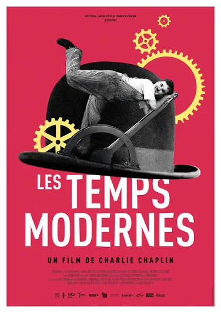
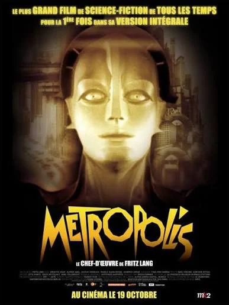
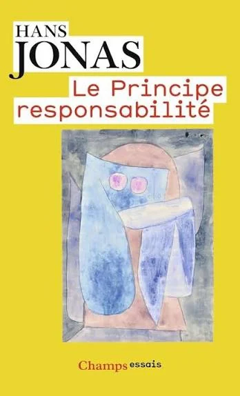
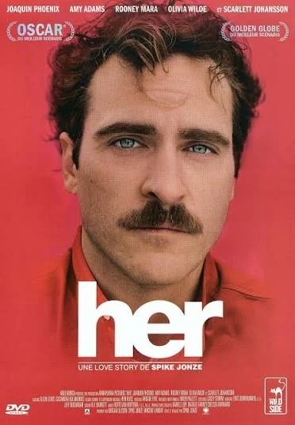
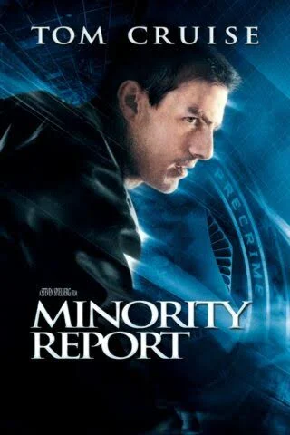

Le mot « progrès » nous paraît si naturel que l'on oublie à quel point l'idée est récente. Pendant des siècles, les hommes ont cru que le meilleur était derrière eux, ou que le temps tournait en rond. Ce n'est qu'à l'âge classique que s'impose l'idée, aujourd'hui banale, que demain peut valoir mieux qu'hier. Avant de se demander si l'essor technologique est un progrès, il faut donc comprendre ce que l'on entend par ce mot, et comment il est né.
« Progrès » vient du latin progressus, « action d'avancer » (de progredi, « marcher en avant »). Comme le mot « humanité » étudié dans le cours 1 d'Humanité, il porte deux sens qu'il faut séparer.
📈 Un fait : avancer
Un mouvement vers l'avant, un accroissement : plus de connaissances, plus de machines, plus de richesses, plus de puissance. Ce sens est descriptif : on peut le constater et parfois le mesurer.
🌅 Une valeur : aller vers le mieux
Un jugement : ce qui avance est meilleur, la condition humaine s'améliore. Ce sens est normatif : il dit ce qui est désirable, et ne se mesure pas avec un instrument.
Quand on parle du progrès, on désigne en réalité des réalités qui ne vont pas forcément du même pas :
Les deux premiers sont cumulatifs : une découverte ou une invention s'ajoute aux précédentes et ne se perd pas. Les deux derniers ne le sont pas : chaque génération doit reconquérir ses droits et sa vertu. Pour cette raison, on peut constater un progrès technique sans pouvoir conclure à un progrès moral.
Ensemble de procédés réglés pour obtenir efficacement un résultat : tailler un silex, labourer, imprimer, programmer. Le grec technè désigne un art, un savoir-faire. Pour les Anciens, elle imite et aide la nature.
À l'origine « discours sur les techniques », le mot désigne aujourd'hui les techniques fondées sur la science. Ce qui caractérise l'époque moderne, ce n'est pas la technique, aussi ancienne que l'homme, mais son alliance avec la science (la « technoscience ») et son accélération : c'est ce que l'on appelle l'« essor technologique ».
Processus d'amélioration continue de la condition humaine, pensé comme cumulatif (les acquis s'ajoutent), orienté (il va quelque part) et indéfini (aucun terme n'est fixé d'avance). Il se distingue du simple changement ou de l'évolution, qui n'impliquent aucun jugement de valeur.
Les Anciens n'imaginaient pas l'histoire comme une ligne ascendante. Trois représentations dominent, qui rendent l'idée de progrès presque impensable.
Pourtant, les Grecs ont très tôt perçu la puissance de la technique, et son ambivalence. Dans un célèbre chant d'Antigone (441 av. J.-C.), Sophocle célèbre l'homme qui traverse les mers, laboure la terre, dompte les animaux et invente la parole. Le mot grec qui le qualifie, deinon, signifie à la fois « merveilleux » et « terrible » : dès l'origine, la puissance de l'homme inquiète autant qu'elle émerveille.
À partir de la Renaissance, une conviction nouvelle s'installe : les Modernes peuvent dépasser les Anciens. Elle s'appuie d'abord sur des faits (l'imprimerie, la boussole, la découverte de l'Amérique, la lunette de Galilée), puis sur une réflexion.
Le maître chartrain Bernard de Chartres compare les Modernes à des nains montés sur les épaules de géants : ils voient plus loin que les Anciens, non par leur propre mérite, mais parce qu'ils sont portés par leurs prédécesseurs. L'image fonde l'idée de cumul du savoir.
Dans le Novum Organum, Francis Bacon affirme que « la science et la puissance de l'homme coïncident » et qu'« on ne commande à la nature qu'en lui obéissant ». Il juge que l'imprimerie, la poudre à canon et la boussole ont changé la face du monde : la science doit désormais se mettre au service de l'amélioration de la vie.
Dans la sixième partie du Discours de la méthode, Descartes espère une philosophie pratique qui nous rendrait « comme maîtres et possesseurs de la nature », pour la conservation de la santé et l'invention d'« une infinité d'artifices ».
Le 27 janvier 1687, Charles Perrault lit à l'Académie française son poème Le Siècle de Louis le Grand : le siècle de Louis XIV vaut bien celui d'Auguste. Fontenelle prolonge la thèse l'année suivante, dans sa Digression sur les Anciens et les Modernes : l'humanité entière est comme un seul esprit qui se cultive au fil des siècles.

Pascal donne à l'idée de cumul sa formulation la plus célèbre. À la différence de l'animal, qui reste ce que la nature l'a fait, l'homme garde et transmet ses acquis : chaque génération part de ce qu'ont trouvé les précédentes.
Les Anciens ne sont donc pas des maîtres à imiter : ils sont les premiers étages d'un édifice que les Modernes continuent.
« Toute la suite des hommes, pendant le cours de tant de siècles, doit être considérée comme un même homme qui subsiste toujours et qui apprend continuellement. »
La Querelle oppose ainsi deux manières de regarder le temps :
🏛️ Les Anciens
L'Antiquité a atteint la perfection en art et en littérature : les grands écrivains sont des modèles à imiter (Boileau, La Fontaine, Racine).
🚀 Les Modernes
Les hommes d'aujourd'hui savent davantage parce qu'ils héritent de tous les siècles écoulés : l'humanité progresse (Perrault, Fontenelle).
Les Modernes ont raison pour les sciences et les techniques, où chaque découverte s'ajoute aux précédentes. Mais Perrault ne dépasse pas Homère : en art (et en morale ?), rien ne garantit que les derniers venus fassent mieux. Le progrès est cumulatif seulement là où les acquis s'additionnent. Toute la suite du cours interroge cette limite.
Si le savoir s'accumule, l'humanité entière peut s'améliorer, et il suffit d'éclairer les hommes pour y parvenir. Au XVIIIe siècle, les Lumières transforment cette intuition en philosophie de l'histoire.
Au XVIIIe siècle, l'idée de progrès cesse d'être une simple constatation sur les sciences : elle devient une philosophie de l'histoire. L'humanité aurait un sens, qui va vers plus de raison, de liberté et de bonheur. C'est l'idée que l'on appelle aujourd'hui, un peu abusivement, la foi des Lumières dans le progrès. Les plus grands penseurs de l'époque la défendent, mais avec des nuances qu'il faut mesurer.
En 1750, devant les docteurs de la Sorbonne, le jeune Turgot (23 ans) présente l'histoire du genre humain comme celle d'un individu qui grandit, avec son enfance et ses progrès, d'une génération à l'autre. Condorcet en donne la version la plus achevée.
L'idée de progrès des Lumières repose ainsi sur trois traits :
Entre 1751 et 1772, l'Encyclopédie de Diderot et d'Alembert fait de ce programme une entreprise collective. Son but, dit Diderot, est de « changer la façon commune de penser ». Elle fait aussi quelque chose de neuf : au côté des arts libéraux, elle réhabilite les arts mécaniques, c'est-à-dire les métiers et les techniques, décrits et dessinés dans des centaines de planches. Le travail manuel entre dans le monde du savoir.
Le grand philosophe des Lumières est beaucoup plus prudent que ses contemporains optimistes. En 1784, dans Qu'est-ce que les Lumières ?, Kant définit les Lumières comme la sortie de l'homme hors de sa « minorité » dont il est lui-même responsable, et lance la devise Sapere aude, « ose te servir de ton propre entendement ». Mais il sait que l'histoire n'avance pas toute seule.

Les hommes progressent, selon Kant, par ce qu'il appelle leur « insociable sociabilité » : ils ont besoin des autres, mais leur rivalité les pousse à se dépasser. C'est par la concurrence et même les conflits que se développent leurs talents.
Ce progrès n'a rien de miraculeux : il est l'œuvre d'êtres imparfaits, dont il ne faut pas attendre trop de vertu. D'où cette formule fameuse sur l'humanité comme « bois tordu » :
« Dans le bois tordu dont l'homme est fait, on ne peut rien tailler de tout à fait droit. »
Surtout, Kant distingue trois degrés de progrès, qui ne se confondent pas, et qui sont au cœur du sujet :
Le progrès technique et scientifique (« cultivés ») et le progrès des manières et des institutions (« civilisés ») sont bien avancés. Mais, écrit Kant, pour nous considérer comme déjà moralisés, « il manque encore beaucoup » : la bonne volonté ne s'obtient pas par accumulation de techniques. C'est la distinction capitale du chapitre.
Dans Le Conflit des facultés (1798), Kant demande si l'on peut prouver que l'humanité progresse. Sa réponse est qu'on ne peut pas le démontrer, mais qu'on peut y croire raisonnablement, car l'histoire donne des « signes » : l'enthousiasme désintéressé des spectateurs européens devant la Révolution française montre que l'humanité est capable de vouloir le droit. Le progrès est donc moins une loi qu'une espérance rationnelle, une tâche que l'on se donne.
Hegel, au contraire, pense que l'histoire est rationnelle en elle-même :
🧭 Kant : une idée régulatrice
Le progrès n'est ni certain ni automatique : c'est une espérance et un devoir, qui dépendent de la liberté des hommes. On peut le vouloir, on ne peut pas le prouver.
🌀 Hegel : une nécessité rationnelle
« L'histoire universelle est le progrès dans la conscience de la liberté » (La Raison dans l'histoire). Par la « ruse de la raison », même les passions et les violences servent ce progrès, qui a un prix : « les périodes de bonheur sont les pages blanches de l'histoire ».
Parmi les formes de progrès, la science paraît la plus incontestable. De Copernic à Einstein, elle corrige ses erreurs et fait reculer l'ignorance. Mais comment avance-t-elle exactement ?
Au XIXe siècle, la technique prend le relais des idées. Les machines à vapeur, les chemins de fer et l'électricité semblent prouver ce que les philosophes avaient promis.
Au XIXe siècle, l'idée de progrès quitte les livres pour s'installer dans les usines, les gares et les expositions. Les philosophes avaient annoncé le progrès, les ingénieurs semblent le réaliser. C'est le moment où l'essor technologique et l'idée de progrès se confondent, au point que l'on ne sait plus lequel justifie l'autre.
À partir des années 1760, l'Angleterre invente un nouveau mode de production, fondé sur la machine, le charbon et l'usine. La technique n'est pas nouvelle, mais son rythme l'est : ce qui prenait des siècles s'accomplit désormais en quelques décennies.
Trois ruptures expliquent le changement d'échelle :
Les conséquences sont massives. La population mondiale, qui atteint un milliard d'habitants vers 1804, en compte huit milliards en novembre 2022. L'espérance de vie, qui ne dépassait guère une trentaine d'années au niveau mondial vers 1900, dépasse aujourd'hui 70 ans. Mais le coût de cette transformation est immédiatement visible : villes insalubres, travail des enfants, pollution du charbon.
Face à ces succès, une confiance presque religieuse s'installe. L'idée de progrès devient une doctrine, parfois une foi, avec ses prophètes et ses cérémonies.
La croyance que le progrès technique entraîne automatiquement le progrès humain : plus de machines, c'est plus de bonheur, de liberté et de vertu. La devise « Ordem e Progresso » du drapeau brésilien (1889), tirée de Comte, en est l'exemple le plus durable. Cette croyance ne se vérifie pas : elle confond un fait (l'accroissement des moyens) avec une valeur (l'amélioration des vies).
Le premier grand critique de cette euphorie n'est pas un nostalgique, c'est un admirateur lucide de l'industrie : Karl Marx.

Marx admire l'œuvre de la bourgeoisie industrielle : elle a bouleversé en moins d'un siècle ce que des millénaires n'avaient pas changé. Elle a dépassé les pyramides, les aqueducs et les cathédrales.
Mais cette puissance productive se paie d'un prix humain, que le progrès technique ne suffit pas à supprimer : l'ouvrier devient le prolongement de la machine.
« La bourgeoisie […] a créé des forces productives plus nombreuses et plus colossales que ne l'avaient fait toutes les générations passées prises ensemble. »
Pour Marx, le progrès technique est réel, mais il ne profite qu'à ceux qui possèdent les machines. Dans Le Capital (1867), il montre que la machine, au lieu d'alléger le travail, peut intensifier la production, déqualifier l'ouvrier et le rendre étranger à son produit : c'est l'aliénation. La question décisive est donc politique : qui contrôle la technique et pour qui produit-on ?
🏭 Le progrès technique réel
Des forces productives sans précédent : on produit plus, plus vite, avec moins de travail humain. Marx y voit la condition d'une libération possible.
⛓️ Un progrès humain incertain
Dans le cadre du capitalisme, cette puissance sert le profit : journées longues, travail des enfants, ouvriers réduits à des rouages. Il faut changer les rapports sociaux, pas seulement les machines.
Mais la confiance n'a jamais été unanime. Dès l'origine, des voix ont rappelé que savoir plus et valoir plus ne sont pas la même chose, et que l'accroissement des moyens ne dit rien de la valeur des fins.
Le progrès a toujours eu ses contradicteurs. Ils ne forment pas un bloc : certains lui reprochent de corrompre les mœurs, d'autres de produire des catastrophes, d'autres de transformer l'homme en rouage. Leur point commun est de refuser l'identification entre puissance technique et amélioration de la vie humaine.
En 1750, l'Académie de Dijon met au concours une question : le rétablissement des sciences et des arts a-t-il contribué à épurer les mœurs ? Tout le monde s'attend à un oui. Rousseau répond non, et remporte le prix.

Rousseau ne dit pas que les sciences sont fausses. Il constate que le progrès des connaissances ne rend pas les hommes plus vertueux : il flatte leur vanité, entretient le luxe et masque l'inégalité sous les apparences de la politesse.
Le savoir et la vertu sont deux ordres distincts : on peut progresser dans l'un en reculant dans l'autre.
« À mesure que nos sciences et nos arts se sont avancés à la perfection, nos âmes se sont corrompues. »
Dans le Discours sur l'inégalité (1755), il va plus loin : la perfectibilité, cette faculté de se perfectionner qui distingue l'homme de l'animal (voir le cours 1 d'Humanité), est aussi « la source de tous les malheurs de l'homme ». Elle l'a sorti de l'état de nature, mais elle l'a livré à la propriété, aux rivalités et à la domination. Le progrès a donc deux faces.
🌿 Rousseau : le progrès est ambigu
Les arts et les sciences développent les talents mais corrompent les mœurs. Rousseau n'appelle pas à « retourner en arrière » : il demande qu'on juge le progrès à sa valeur morale.
🎩 Voltaire : le progrès est un bienfait
Dans Le Mondain (1736), il fait l'éloge du luxe et du confort : « le superflu, chose très nécessaire ». À Rousseau, il écrit en 1755 qu'« il prend envie de marcher à quatre pattes » en le lisant.
Au XXe siècle, la critique cesse d'être philosophique pour devenir un constat historique. Les guerres industrielles, puis les génocides et l'arme atomique montrent que la technique peut servir la destruction avec la même efficacité que la production.
Trois diagnostics philosophiques en tirent la leçon :
Au lendemain de la Grande Guerre, le poète constate que la science européenne a servi à fabriquer des armes. « Nous autres, civilisations, nous savons maintenant que nous sommes mortelles. » L'idée d'un progrès linéaire et garanti ne résiste plus à l'expérience du désastre.
Écrite en exil pendant la guerre, l'œuvre soutient que les Lumières, en voulant libérer l'homme par la raison, ont réduit celle-ci à un instrument de domination de la nature et des hommes. Le diagnostic est célèbre : « la terre entièrement éclairée resplendit sous le signe d'une triomphante calamité ».
Benjamin décrit l'Angelus Novus de Paul Klee comme l'ange de l'histoire : le visage tourné vers le passé, il ne voit que des ruines qui s'accumulent, tandis qu'une tempête le pousse vers l'avenir. « Cette tempête, c'est ce que nous appelons le progrès. »
Forme de rationalité qui ne s'intéresse qu'à l'efficacité des moyens en vue d'une fin donnée, sans jamais juger de la valeur de cette fin. Une administration peut organiser parfaitement le transport de marchandises comme celui de déportés : la raison fonctionne, mais plus aucune question morale ne se pose.
Hannah Arendt propose un autre signe. Ouvrant La Condition de l'homme moderne (1958) sur le lancement du satellite Spoutnik (1957), elle y voit l'événement d'une humanité qui veut s'évader de la Terre, sa « prison ». Or la Terre, rappelle-t-elle, est « la quintessence même de la condition humaine » : vouloir y échapper, c'est risquer de ne plus être l'humanité que l'on était.
La réponse spontanée est oui : un marteau sert à planter un clou ou à tuer, tout dépend de celui qui s'en sert. C'est la thèse de la neutralité de la technique. Plusieurs penseurs du XXe siècle la contestent.
🔨 La technique-instrument
La technique est un moyen à la disposition d'hommes libres. Elle n'est ni bonne ni mauvaise : tout dépend de l'usage. Il suffit de bien l'employer.
🌐 La technique-milieu
La technique transforme celui qui l'emploie : elle change nos manières de voir, de travailler, de décider. Avec elle, ce sont nos fins mêmes qui se modifient.
L'essence de la technique n'est « rien de technique » : c'est une manière de regarder le monde. Il l'appelle l'arraisonnement (Gestell) : tout apparaît comme un stock disponible, à exploiter. Le Rhin n'est plus un fleuve, mais un fournisseur d'énergie pour une centrale hydroélectrique.
La technique est devenue autonome : elle ne cherche plus qu'une chose, l'efficacité maximale, et chaque innovation en appelle une autre. Les hommes croient la maîtriser, alors qu'ils se règlent sur elle.
Il décrit un décalage prométhéen : nos produits (la bombe, les machines) sont devenus plus puissants que nos capacités à les imaginer et à en répondre. La « honte prométhéenne » est celle de l'homme devant la perfection de ses machines, auprès desquelles il se sent déficient.
Le cinéma s'est emparé de ces inquiétudes avant la philosophie :

Un ouvrier à la chaîne est emporté par les engrenages de l'usine. Le film montre l'aliénation par la machine et le rythme imposé par le rendement.

Une ville futuriste divisée entre les maîtres et les ouvriers qui font tourner ses machines : le progrès technique y creuse les inégalités.
La technique n'est pas un simple outil que l'on prend ou laisse. Elle modifie nos pratiques, oriente nos choix et crée de nouveaux problèmes. Ce n'est pas une raison de la rejeter, mais de se demander, à chaque étape, ce qu'elle fait de nous, et non seulement ce que nous faisons avec elle.
Si le progrès technique ne garantit pas le progrès humain, il ne s'agit pas d'y renoncer, mais de le gouverner. La dernière partie du cours examine comment penser ce pilotage : par la responsabilité, face à l'écologie et à l'intelligence artificielle.
Les catastrophes du XXe siècle n'ont pas fait disparaître l'essor technologique : il s'est accéléré. Génie génétique, nucléaire, réseaux, intelligence artificielle : les moyens d'action de l'humanité n'ont jamais été aussi vastes. La philosophie contemporaine ne se demande donc plus seulement si le progrès est souhaitable, mais comment répondre de notre puissance.
Dans Le Principe responsabilité (1979), dont le sous-titre est Une éthique pour la civilisation technologique, le philosophe allemand Hans Jonas pose que la technique moderne a changé la nature de l'action humaine. Prométhée, écrit-il, est désormais « irrévocablement déchaîné » (voir la partie VI du cours 1 d'Humanité).
L'homme peut désormais détruire la vie sur Terre, ou en modifier les conditions : bombe atomique, climat, génome. Il n'y avait pas d'équivalent dans l'histoire des techniques.
Les conséquences d'un choix technique dépassent le cadre du voisinage et du présent : elles touchent des populations éloignées, et les générations futures. L'éthique traditionnelle, centrée sur le prochain et le court terme, ne suffit plus.
Nos actions s'ajoutent les unes aux autres, et un dommage causé à la nature ou au climat peut être impossible à réparer.

Jonas reformule l'impératif catégorique de Kant pour l'âge technologique : il ne s'agit plus seulement de pouvoir universaliser sa maxime, mais de préserver la possibilité même de l'humanité.
Il en tire une règle de prudence, l'« heuristique de la peur » : devant une technique dont les effets sont incertains, on doit donner la priorité au pronostic de malheur sur le pronostic de bonheur.
« Agis de façon que les effets de ton action soient compatibles avec la permanence d'une vie authentiquement humaine sur Terre. »
Cette éthique renverse la logique du progrès triomphant : ce qui est techniquement possible n'est pas forcément légitime. La charge de la preuve revient à ceux qui innovent, non à ceux qui s'inquiètent. Et le but n'est pas d'arrêter la science, mais de garder la maîtrise des fins.
La responsabilité de Jonas prend une forme concrète avec la crise écologique, qui ébranle l'idée même de progrès : une croissance indéfinie de la production et de la consommation est-elle possible dans un monde fini ?
Quatre étapes marquent la prise de conscience. En 1972, le rapport Meadows, commandé par le Club de Rome, montre qu'une croissance exponentielle se heurte aux limites des ressources (voir le dossier de culture générale). En 1987, le rapport Brundtland définit le développement durable comme celui qui répond aux besoins du présent « sans compromettre la capacité des générations futures de répondre aux leurs ». En 2000, le chimiste Paul Crutzen propose de nommer Anthropocène une époque géologique où l'humanité est devenue une force géologique. En 2015, l'accord de Paris fixe l'objectif de contenir le réchauffement bien en dessous de 2 °C, en visant 1,5 °C.
Proposé pour désigner une nouvelle époque géologique où l'activité humaine est devenue la principale force qui modifie la Terre (climat, océans, biodiversité). Le mot n'est pas officiellement retenu par les géologues, mais il s'est imposé dans le débat. Il renverse le rêve cartésien : l'homme est devenu « maître » de la nature, et il en est responsable.
Deux grandes réponses s'opposent :
🛰️ Le technosolutionnisme
La technique, qui a créé le problème, saura le résoudre : énergies nouvelles, captage du carbone, géo-ingénierie. Il suffit d'innover davantage. Mais cette confiance reporte le risque sur l'avenir.
🌱 La sobriété
Le problème n'est pas seulement technique : il tient à notre modèle de croissance. Il faut apprendre à limiter nos besoins, en repensant ce que l'on appelle progrès (décroissance, sobriété).
L'intelligence artificielle (IA) concentre aujourd'hui toutes les questions de ce chapitre. Le lancement de ChatGPT en novembre 2022 a rendu accessible à des centaines de millions de personnes une technique capable de rédiger, traduire, programmer, créer des images. Elle promet des gains considérables (médecine, recherche, productivité) et soulève des inquiétudes de nature nouvelle.
La culture imagine ces questions depuis longtemps :

Un homme tombe amoureux d'un assistant vocal. Le film interroge ce que la technique fait à nos relations, quand une machine peut simuler l'attention d'autrui.

Une police arrête des criminels avant qu'ils agissent, grâce à des prédictions. La technique y met en danger la liberté et la responsabilité individuelles.
La littérature d'anticipation fait de même, du Meilleur des mondes d'Huxley (1932), où une société heureuse a sacrifié sa liberté au confort technique, à Fahrenheit 451 de Bradbury (1953), où les écrans éloignent de la pensée.
Faut-il alors renoncer à l'idée de progrès ? Ni l'enthousiasme des Lumières, ni le pessimisme absolu ne résistent à l'examen. Dans les données, le progrès est réel : en deux siècles, l'espérance de vie a plus que doublé, la mortalité infantile a chuté, la part de l'humanité vivant dans l'extrême pauvreté est passée de plus de 80 % vers 1820 à moins de 10 % aujourd'hui. Mais ces acquis sont inégalement répartis, et se paient souvent d'un coût écologique et humain.
Un progrès technique n'est un progrès de l'humanité que s'il remplit trois conditions : il améliore réellement la vie de tous et non de quelques-uns ; il élargit la liberté des hommes au lieu de les asservir à leurs moyens ; il reste soutenable pour les générations futures. Le progrès n'est pas une loi de l'histoire, c'est un projet : il se juge, il se choisit et il se défend, comme l'humanité elle-même, que l'on a dit être « une dignité à conquérir ».